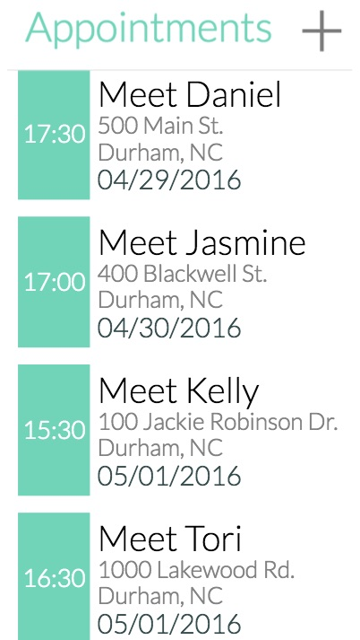

Appointments
Appointments is an application that tracks your appointments. It uses jQuery and localStorage to save and migrate the user's data across pages.
Website
Github
Memory
Memory is an application written in jQuery. It allows users to select the amount of tiles they desire to use, and randomly populates the game with a different set of icons each time the game is played.
Website
Github
 foodstre.am
foodstre.am